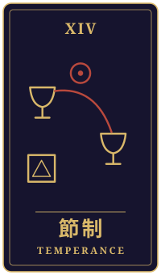

十一回
物語の手前に、ひとつの相談がありました。三枚のタロットをめぐるやりとりを、聞こえたままに書き留めています。
持ち込まれた相談
亡くなった人に宛てた手紙を集めた、という記事を読みました。「後で伝えればいいは、伝えられないかもしれない」という言葉が、ずっと頭から離れません。父が亡くなって五年になります。葬式の晩に兄とひどい言い合いをして、それきり連絡を取っていません。兄は生きているのに、まるで手紙の宛先みたいに遠い人になってしまいました。本当は、父の最期の夜、兄からの電話にわざと出なかったのは僕です。兄が間に合わなかったのは、そのせいかもしれません。今さら連絡して何を言えばいいのか。謝りたいのか、許されたいだけなのか、自分でもわかりません。このまま黙っているほうが、兄にとっても楽なのでしょうか。
タロットの読み解き

過去
戦車・正位置
過去に出ている戦車は、前へ進もうとする力と、勝ちを求める意志を表すカードです。五年前のあの晩、お二人の言い合いには、どちらも引けない思いがあったのでしょうね。正位置の戦車が示すのは、その勢いの中で、自分を抑える「自制」が静かに求められていたという見方もできます。

現在
世界・逆位置
今の世界は逆位置です。ひとつの流れがまだ終わりきらず、あと一歩のところで足が止まっている状態を表します。「後で伝えればいい」という言葉が離れないのは、その未完の部分が、あなたの中で呼びかけているからかもしれませんね。兄さんとの距離は、五年という時間の中で、止まったまま形を変えずにいるのでしょう。

未来
節制・正位置
未来に出ている節制は、異なるものを混ぜ合わせて、ほどよい釣り合いを探すカードです。謝りたいのか、許されたいのか分からないというご自身の揺れも、無理に答えを出さず、そのまま見つめてよいのだと思います。ここでの調和は、正しい言葉を見つけることより、自分の中の重さを量り直すことに近いのかもしれません。
最後に
この三枚から見えてくるのは、言い合いの勢いで止まってしまったものを、もう一度ゆっくり動かしてみる時期が来ているかもしれない、ということです。黙っているほうが兄さんにとって楽かどうかは、カードからは断定できません。ただ、まず自分の本当の気持ちを確かめることが、どの道を選ぶにしても手がかりになるでしょう。あの晩の電話のことも、ひとりで背負い続けなくてよいのだと思います。この重さがご自身だけでは抱えきれないと感じたら、心理カウンセラーなど専門の方に話してみるのも一つの方法です。
帰り際の問いどこを足し、どこを抑えるのか。
読み解きは、タロット占い「月夜のアルカナ」が、この相談と引かれた三枚から返したものです。小説は同じ三枚を、別の角度から描いています。相談者は物語のための架空の人物です。相談文・読み解き・短編本文は、いずれも生成AIを使って制作しています。
物語に戻る